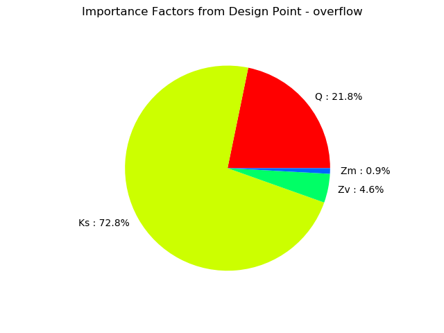

Estimate a flooding probability¶
In this example, we estimate the probability that the ouput of a function exceeds a given threshold with the FORM method. We consider the flooding model.
Introduction¶
The following figure presents a dyke protecting industrial facilities. When the river level exceeds the dyke height, flooding occurs. The model is based on a crude simplification of the 1D hydrodynamical equations of Saint-Venant under the assumptions of uniform and constant flow rate and large rectangular sections.
Four independent random variables are considered:
 : flow rate [m^3 s^-1]
: flow rate [m^3 s^-1] : Strickler [m^1/3 s^-1]
: Strickler [m^1/3 s^-1] : downstream height [m]
: downstream height [m] : upstream height [m]
: upstream height [m]
When the Strickler coefficient increases, the riverbed generates less friction.
The model depends on four parameters:
the height of the dyke: [m],
the altitude of the river banks: [m],
the river length: [m],
the river width: [m].
The altitude of the dyke is:
The slope  of the river is assumed to be close to zero, which implies:
of the river is assumed to be close to zero, which implies:

if  .
.
The water depth is:

for any  .
.
The flood altitude is:
The altitude of the surface of the water is greater than the altitude of the top of the dyke (i.e. there is a flood) if:
is greater than zero.
The following figure presents the model with more details.
If we substitute the parameters into the equation, we get:
We assume that the four inputs have the following distributions:
- ~ Gumbel(mode=1013, scale=558), > 0
- ~ Normal(mu=30.0, sigma=7.5), > 0
- ~ Uniform(a=49, b=51)
- ~ Uniform(a=54, b=56)
Moreover, we assume that the input random variables are independent.
We want to estimate the flood probability:
References¶
Iooss B, Lemaître P (2015) A review on global sensitivity analysis methods. In: Meloni C., Dellino G. (eds) Uncertainty management in Simulation-Optimization of Complex Systems: Algorithmsand Applications, Springer
Baudin M., Dutfoy A., Iooss B., Popelin AL. (2015) OpenTURNS: An Industrial Software for Uncertainty Quantification in Simulation. In: Ghanem R., Higdon D., Owhadi H. (eds) Handbook of Uncertainty Quantification. Springer
Define the model¶
[1]:
from __future__ import print_function
import openturns as ot
Create the marginal distributions of the parameters.
[2]:
dist_Q = ot.TruncatedDistribution(ot.Gumbel(558., 1013.), 0, ot.TruncatedDistribution.LOWER)
dist_Ks = ot.TruncatedDistribution(ot.Normal(30.0, 7.5), 0, ot.TruncatedDistribution.LOWER)
dist_Zv = ot.Uniform(49.0, 51.0)
dist_Zm = ot.Uniform(54.0, 56.0)
marginals = [dist_Q, dist_Ks, dist_Zv, dist_Zm]
Create the joint probability distribution.
[3]:
distribution = ot.ComposedDistribution(marginals)
distribution.setDescription(['Q', 'Ks', 'Zv', 'Zm'])
Create the model.
[4]:
model = ot.SymbolicFunction(['Q', 'Ks', 'Zv', 'Zm'],
['(Q/(Ks*300.*sqrt((Zm-Zv)/5000)))^(3.0/5.0)+Zv-58.5'])
Define the event¶
Then we create the event whose probability we want to estimate.
[5]:
vect = ot.RandomVector(distribution)
G = ot.CompositeRandomVector(model, vect)
event = ot.ThresholdEvent(G, ot.Greater(), 0.0)
event.setName('overflow')
Estimate the probability with FORM¶
Define a solver.
[6]:
optimAlgo = ot.Cobyla()
optimAlgo.setMaximumEvaluationNumber(1000)
optimAlgo.setMaximumAbsoluteError(1.0e-10)
optimAlgo.setMaximumRelativeError(1.0e-10)
optimAlgo.setMaximumResidualError(1.0e-10)
optimAlgo.setMaximumConstraintError(1.0e-10)
Run FORM.
[7]:
startingPoint = distribution.getMean()
algo = ot.FORM(optimAlgo, event, startingPoint)
algo.run()
result = algo.getResult()
standardSpaceDesignPoint = result.getStandardSpaceDesignPoint()
Retrieve results.
[8]:
result = algo.getResult()
probability = result.getEventProbability()
print('Pf=', probability)
Pf= 0.0005340887806479517
Importance factors.
[9]:
result.drawImportanceFactors()
[9]:
